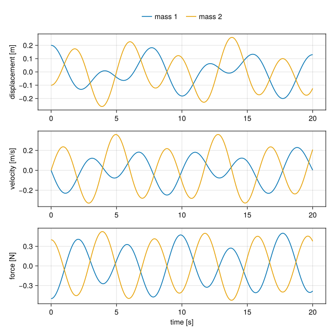
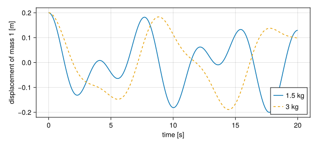

Masses on springs
Two masses on a line, held between two walls by three springs. Each spring pulls with a force proportional to how far it is stretched past its rest length,
\[F = k\,(\ell - L),\]
and each mass moves by Newton's second law, $m\,a = \sum F$. This is the second of Python STREAM's examples of a general calculation. Here it shows parameters, observed variables, and how to tell mtkcompile which variables to keep.
A mechanical connector
A flange carries a position, equal at every flange joined to it, and a force, which sums to zero over them: the forces two bodies exert on each other at a joint are equal and opposite.
using ModelingToolkit, OrdinaryDiffEq, Latexifyusing ModelingToolkit: t_nounits as t, D_nounits as D@connector function Flange(; name) vars = @variables x(t) f(t) [connect = Flow] return System(Equation[], t, vars, []; name)endComponents
A spring of stiffness $k$ and rest length $L$ is stretched by $s = x_b - x_a - L$. Its pull on what holds its ends is $k\,s$, toward its middle. A flange's force is counted as the force on the component, so the force on the spring at end $a$ is $-k\,s$:
function Spring(; name, k=1.0, L=1.0) @named a = Flange() @named b = Flange() ps = @parameters k = k L = L vars = @variables s(t) eqs = [s ~ b.x - a.x - L, a.f ~ -k * s, b.f ~ k * s] return compose(System(eqs, t, vars, ps; name), a, b)endA mass has one flange, and the force there is the sum of what is attached to it. Python STREAM's mass carries its acceleration as a variable of its own, set by $F = m a$. So does this one:
function Mass(; name, m=1.0) @named flange = Flange() ps = @parameters m = m vars = @variables x(t) [state_priority = 10] v(t) [state_priority = 10] a(t) eqs = [x ~ flange.x, D(x) ~ v, D(v) ~ a, m * a ~ flange.f] return compose(System(eqs, t, vars, ps; name), flange)endfunction Wall(; name, x0=0.0) @named flange = Flange() ps = @parameters x0 = x0 return compose(System([flange.x ~ x0], t, [], ps; name), flange)endstate_priority is explained below.
The model
The walls stand 3 m apart, and each spring is 1 m long at rest, so the masses rest at 1 m and 2 m. The first mass is 1.5 kg, the second 1 kg, and every spring has $k = 1$ N/m.
@named left = Wall(x0=0.0)@named right = Wall(x0=3.0)@named s1 = Spring()@named s2 = Spring()@named s3 = Spring()@named m1 = Mass(m=1.5)@named m2 = Mass(m=1.0)connections = [ connect(left.flange, s1.a), connect(s1.b, m1.flange, s2.a), connect(s2.b, m2.flange, s3.a), connect(s3.b, right.flange),]@named model = compose(System(connections, t; name=:model), left, s1, m1, s2, m2, s3, right)sys = mtkcompile(model)latexify(equations(sys); env=:aligned)\[ \begin{aligned} \frac{\mathrm{d} ~ \mathtt{m2.v}\left( t \right)}{\mathrm{d}t} &= \mathtt{m2.a}\left( t \right) \\ \frac{\mathrm{d} ~ \mathtt{m2.x}\left( t \right)}{\mathrm{d}t} &= \mathtt{m2.v}\left( t \right) \\ \frac{\mathrm{d} ~ \mathtt{m1.v}\left( t \right)}{\mathrm{d}t} &= \mathtt{m1.a}\left( t \right) \\ \frac{\mathrm{d} ~ \mathtt{m1.x}\left( t \right)}{\mathrm{d}t} &= \mathtt{m1.v}\left( t \right) \end{aligned} \]
Four equations remain, a position and a velocity per mass:
latexify(unknowns(sys); env=:inline)\[\left[ \begin{array}{c} \mathrm{\mathtt{m2.v}}\left( t \right) \\ \mathrm{\mathtt{m2.x}}\left( t \right) \\ \mathrm{\mathtt{m1.v}}\left( t \right) \\ \mathrm{\mathtt{m1.x}}\left( t \right) \\ \end{array} \right]\]
The accelerations are not among them. $m\,a = F$ can be solved for $a$ in closed form, so mtkcompile moved $a$ to the observed equations, along with the spring stretches, the forces and every flange position:
length(observed(sys))25Python STREAM keeps the acceleration as an algebraic unknown, marked False in the mass vector, and its solver iterates on it at every step. Here it costs one division, and it can still be read from the solution.
Choosing what to keep
A mass's position and its flange's position are equal, and so is the position of the end of each spring attached to it. All of these are the same variable, and mtkcompile keeps one. Left to itself it may keep the spring's end, s1.b.x, which is correct but reads badly. state_priority on the mass's x and v asks it to prefer those. It is a preference, not a requirement, and changes nothing about the solution.
Parameters
The parameters are every spring's stiffness and rest length, every mass and both walls:
latexify(parameters(sys); env=:inline)\[\left[ \begin{array}{c} \mathtt{left.x0} \\ \mathtt{s1.k} \\ \mathtt{s1.L} \\ \mathtt{m1.m} \\ \mathtt{s2.k} \\ \mathtt{s2.L} \\ \mathtt{m2.m} \\ \mathtt{s3.k} \\ \mathtt{s3.L} \\ \mathtt{right.x0} \\ \end{array} \right]\]
They stay symbolic through compilation, so the same compiled system can be solved with other values. The masses start displaced from rest, the first by 0.2 m and the second by −0.1 m:
op = [sys.m1.x => 1.2, sys.m1.v => 0.0, sys.m2.x => 1.9, sys.m2.v => 0.0]prob = ODEProblem(sys, op, (0.0, 20.0))sol = solve(prob, Tsit5(); abstol=1e-10, reltol=1e-10)using CairoMakiefig = Figure(size=(650, 650))labels = ["displacement [m]", "velocity [m/s]", "force [N]"]axes = [Axis(fig[k, 1]; ylabel=labels[k]) for k in 1:3]axes[3].xlabel = "time [s]"linkxaxes!(axes...)for (mass, rest, name) in ((sys.m1, 1.0, "mass 1"), (sys.m2, 2.0, "mass 2")) lines!(axes[1], sol.t, sol[mass.x] .- rest; label=name) lines!(axes[2], sol.t, sol[mass.v]) lines!(axes[3], sol.t, sol[mass.flange.f])endLegend(fig[0, 1], axes[1]; orientation=:horizontal, framevisible=false)fig
remake changes a parameter without compiling again. With the first mass doubled, it swings more slowly:
heavy = solve(remake(prob; p=[sys.m1.m => 3.0]), Tsit5(); abstol=1e-10, reltol=1e-10)fig = Figure(size=(650, 300))ax = Axis(fig[1, 1]; xlabel="time [s]", ylabel="displacement of mass 1 [m]")lines!(ax, sol.t, sol[sys.m1.x] .- 1.0; label="1.5 kg")lines!(ax, heavy.t, heavy[sys.m1.x] .- 1.0; label="3 kg", linestyle=:dash)axislegend(ax; position=:rb)fig
The exact motion
Small or not, the motion is linear. Written for the displacements $u$ from rest, it is $M\ddot u = -K u$ with
\[M = \begin{pmatrix} m_1 & 0 \\ 0 & m_2 \end{pmatrix}, \qquad K = \begin{pmatrix} 2k & -k \\ -k & 2k \end{pmatrix}.\]
Its normal modes solve $K\phi = \omega^2 M \phi$. Starting from rest, each mode oscillates as $\cos \omega t$ with the amplitude the initial displacement gives it:
using LinearAlgebraM = Diagonal([1.5, 1.0])K = [2.0 -1.0; -1.0 2.0]ω², ϕ = eigen(K, Matrix(M))c = ϕ \ [0.2, -0.1]u(τ) = ϕ * (c .* cos.(sqrt.(ω²) .* τ))deviation = maximum(maximum(abs, u(τ) .- [sol(τ; idxs=sys.m1.x) - 1, sol(τ; idxs=sys.m2.x) - 2]) for τ in 0:0.1:20)@assert deviation < 1e-6(frequencies=sqrt.(ω²), deviation)(frequencies = [0.8858609162721143, 1.5964284419775487], deviation = 1.2419387740436605e-10)